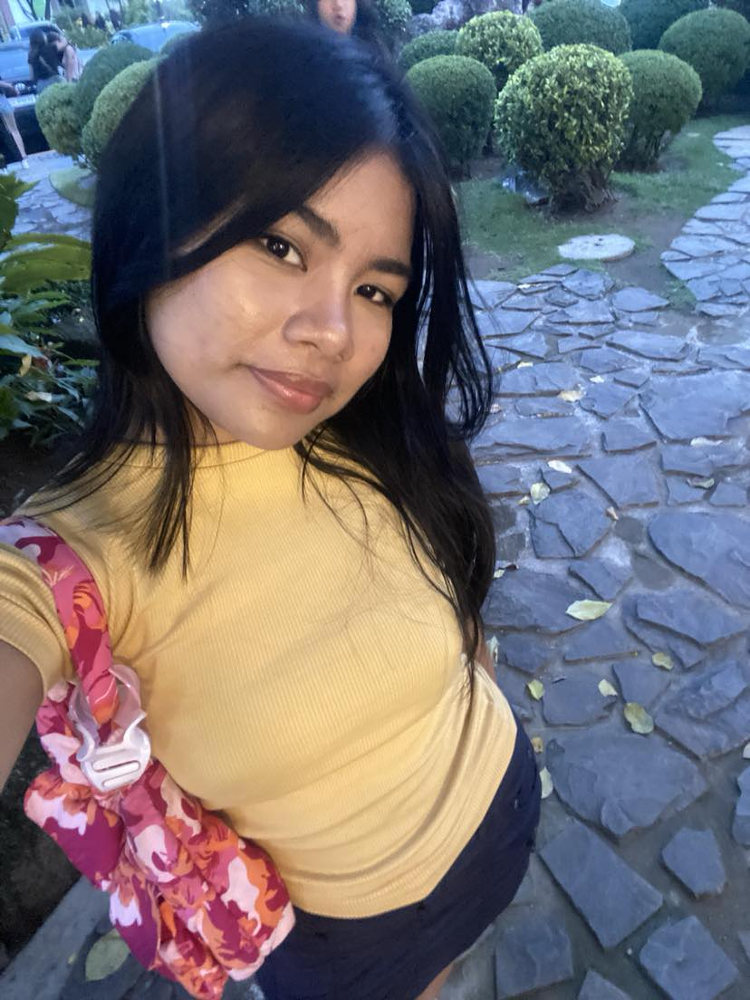
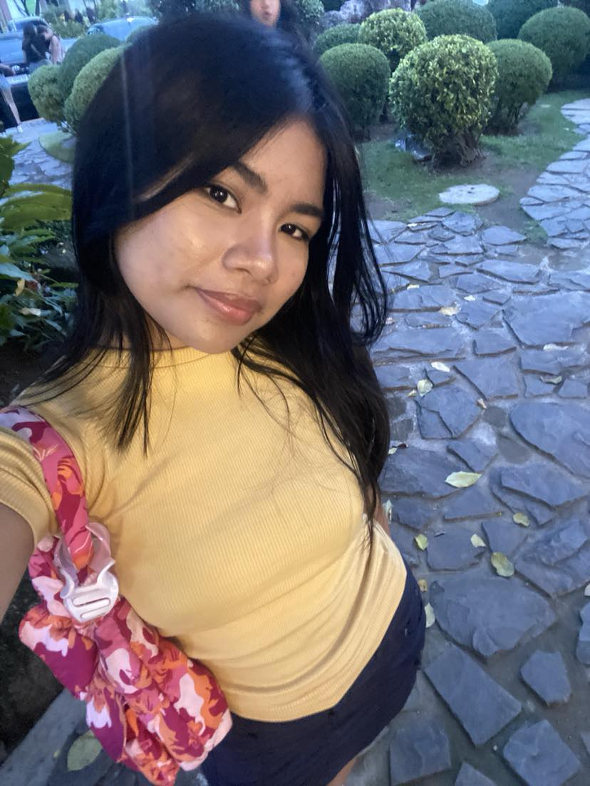

Lovely Mae Cabarrubias
18 years old
Contact Info
📧 cabarrubiaslovely@gmail.com
Hello!
Hello, my name is Lovely Mae Cabarrubias. I have always been conscious of my surroundings, and it bothers me when people throw trash improperly or leave it in places it doesn’t belong. I created this website to inspire everyone to practice the 4Rs (Reduce, Reuse, Recycle, and Recover), as discussed throughout this site. Together, our small efforts can create a cleaner, healthier planet for all of us.
“I’ve always been concerned about the impact of waste on our planet. My journey began when I witnessed the effects of pollution in my community, which ignited my commitment to promote responsible waste management practices.”
“I believe that everyone can contribute to a cleaner planet. This website is my way of providing accessible information and resources for people who want to make even small, meaningful changes in their daily lives.”
“My interest in waste management began when I realized how much waste we generate every day in our homes and workplaces. This website is my contribution to raising awareness and encouraging sustainable practices.”
My Mission
My mission is simple: to raise awareness about waste management and promote the importance of adopting sustainable practices. I believe that by educating people on how to properly manage waste, we can create a more sustainable world. I hope this website serves as a helpful resource for anyone looking to make a positive impact on the environment.
Why Waste Management?
Waste management is not just about keeping our surroundings clean; it’s about preserving resources, protecting wildlife, and ensuring a healthier future. I created this platform to help others understand that proper waste disposal is essential in minimizing pollution and conserving our natural resources. When we each do our part, we can make a significant difference.
“This website is not just a project; it's a reflection of my passion and dedication to waste management. I want to help others see that every small action counts, and together, we can create lasting change.”